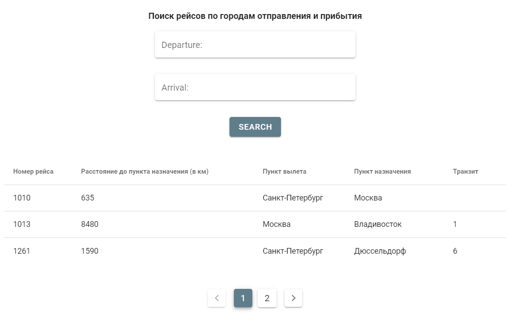
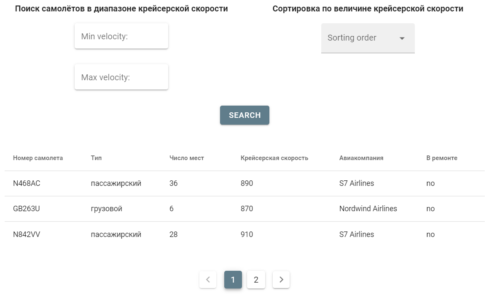
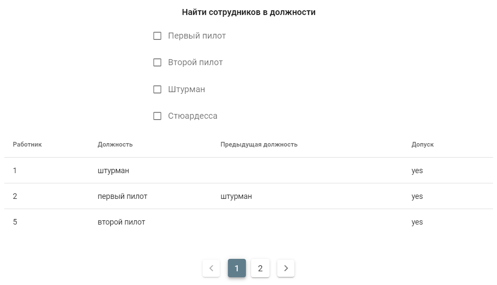

4. Адаптация интерфейсов vue.js
Задание:
Необходимо реализовать интерфейс списков объектов, в котором подключить фильтры из второй лабораторной. В интерфейсе должен быть обеспечен следующий функционал:
- сортировка объектов.
- пагинация.
- поиск по объектам.
- фильтрация с чекбоксами.
- фильтры на диапазон.
Поиск по полям (+ пагинация):

Сортировка и поиск в диапазоне (+ пагинация):

Чекбокс-фильтр (+ пагинация):
